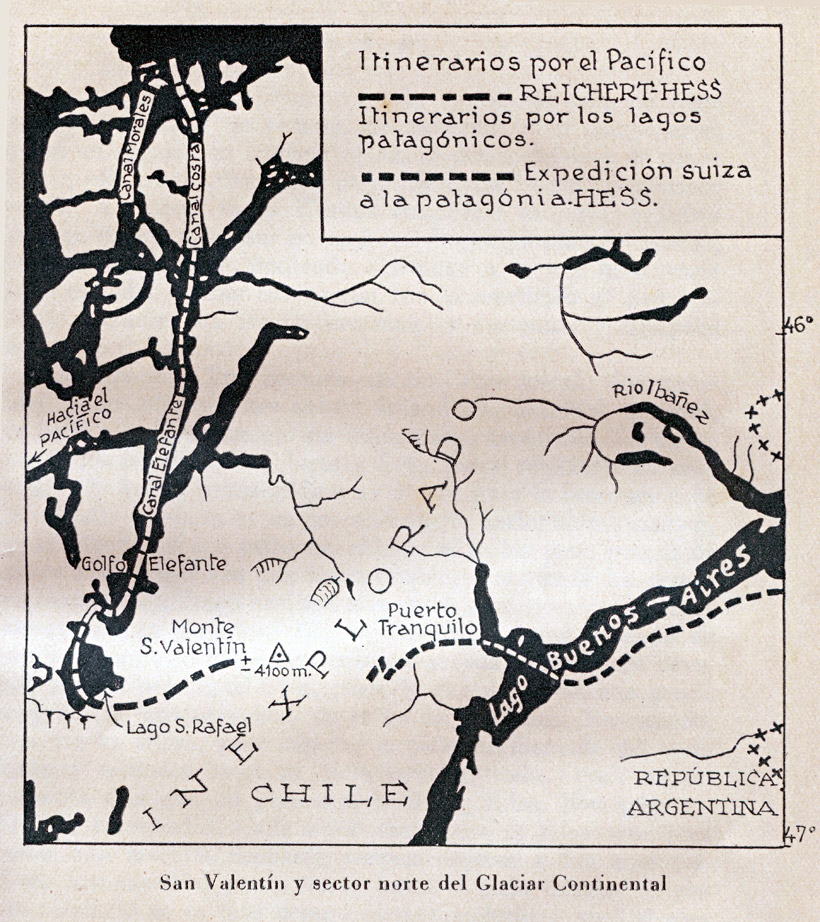

- Volver a
- Inicio
- Revista Digital
- Libros
Montañas del Pacífico, del Aconcagua al Cabo de Hornos
Restauración Fotográfica: Centro Cultural Argentino de Montaña, Natalia Fernández Juárez
AUTOR: Saint Loup
EDITORIAL: Editorial Juventud, Barcelona, España.
AÑO: Primera Edición, julio de 1952
FORMATO: 15 x 22 cm.
PÁGINAS: 200
IDIOMA: Castellano
FOTOGRAFÍAS e ILUSTRACIONES: Bernhard, Handler, Bruno Guth, Lothard Herold, Jorge Pagliere y el Autor

Tapa del libro Montañas del Pacífico, del Aconcagua al Cabo de Hornos. Autor: Saint Loup
Introducción
La primera vez que divise la cordillera de los Andes fue desde La Paz. El tren se había detenido a 145 kilómetros de Mendoza. Llanura infinita... Un viento desapacible quebraba las hierbas que el invierno había amarilleado. Los espinos rasgaban las nubes de polvo. El crepúsculo descendía. Yo no iba preparado ni prevenido para aquel espectáculo. Nada atraía allí amablemente la atención como en los Alpes, donde los valles van a recibir a sus visitantes hasta las afueras de las ciudades, se elevan tomando precauciones, matizan la visión de la montaña presentando en el primer momento agradables perspectivas para anunciar la elevación de las crestas, luego el surgir de las agujas, la armonía de los torreones, el alineamiento de las antorchas de piedra... «paciencia en el azul». Ningún paso secreto entre el torrente y los inmóviles campos de cardos azulados, ninguna entrada solemne en la catedral de hielo sobre un jardín de edelweis.
i La arida llanura descubría de repente 300 kilómetros de montañas, a más de 200 kilómetros a vuelo de pájaro! La cordillera y la precordillera se confundían en las mismas líneas azules. Un revuelo de cimas, un cabrilleo de crestas, olas de aquel mar azotado por el viento, teñido por la noche, irrumpiendo de norte a sur hacia la llanura, playa dorada abierta a la inmensidad... Ningún accidente notable, aparte la ola de fondo del Tupungato, con su chorreante espuma de nieve a 6.650 metros, y el tridente de Neptuno del Plata, agitando a 6.310 metros sus desiguales y plateadas puntas. Por primera vez, la maravillosa visión de los Montes Pacíficos sobre el horizonte del invisible Océano Pacifico... Ninguna obra maestra de la arquitectura como el Cervino - Negra de Peuterey - Cima Grande di Lavaredo, sino un resumen estético de formas y de colores. No existe el detalle, pero se impone el conjunto de acabada belleza. La mirada se detiene extasiada, sin saber con certeza si son realmente montañas lo que contempla.

Mapa de itinerarios por el Pacífico de la zona de San Valentín y el sector norte del Glaciar Continental.
Libro: Montañas del Pacífico, del Aconcagua al Cabo de Hornos
Al día siguiente la decoración habíase aproximado. La distancia desde el parque San Martin de Mendoza no era más que de 100 kilómetros. Era otra vez al atardecer y las ramas de las gigantescas palmeras bendecían sorprendentes contrastes... La bahía de Rio de Janeiro y las nieves a 4.000 metros, sobre planos que se diferenciaban apenas y que la noche estaba a punto de unificar. La sombra azul me sobrecogía: azul-negro sobre los bosques subtropicales, azul de ultramar en la llanura desértica, fuera del oasis Mendoza, azul cielo en los declives, azul claro de luna en el límite de las nieves... Era una montaña de ensueño... Siluetas vaporosas de un sueño agradable que nos ofrece los contornos de un mundo desconocido, imposible de retener al despertar, cuando llega el día... El alma de la Cordillera de los Andes, Iba a descubrir allá arriba una visión nueva de la eterna poesía.
Tres años más tarde deje la cordillera sin haber descubierto nada, y tuve que volver a los Alpes para aprender de nuevo a querer a la montaña. No es que pretenda no haber hallado nada de valor técnico. Muy al contrario. La visión moderna, el alpinismo acrobático, no solo existe, sino que se amplifica a través de los Andes. La facilidad de las montañas sudamericanas es una leyenda hija de nuestra ignorancia. Allá es donde he hallado los problemas de escalada mas difíciles que pueden concebirse humanamente. La pared sur del Aconcagua, San Valentín y glaciar continental, Fitz-Roy y el Torre, cuatro proposiciones técnicamente originales, forman la primera parte de este libro.
No quiero decir tampoco que la visión estética no esté en armonía con la altura y la grandiosidad. No. Los panoramas son variados y característicos de cada clima, tan pronto tiroleses como himalayos, a veces groenlandeses o noruegos, presaharianos o centroafricanos. Desde este punto de vista, la cordillera es incomparable. Yo he podido hallar en ella la libertad en su soledad. La aventura que empieza a una Jornada de distancia de todo lugar habitado, es ilimitada hasta la muerte... He tropezado con las fuerzas extraordinarias que obstaculizan la montaña, la «puna» provocada por las grandes alturas. Lo inmenso de las jornadas de aproximación. El viento del Pacifico que desencadena la tempestad eterna sobre los Andes patagónicos. El andinista lucha contra ellas con la voluntad disminuida por la misma grandiosidad de su conquista, ayudado por el «baqueano», buen conocedor del terreno, y por la mula, sorprendente animal del que no tenemos el equivalente en nuestras montañas. Este conjunto de los obstáculos opuestos al andinista y de los auxiliares que lo sirven, forma la segunda parte de MONTANAS DEL PACIFICO .
Erupción del Volcán Villarrica. Libro: Montañas del Pacífico, 1952 de Saint Loup
Lo que no he podido hallar ha sido el alma de la cordillera, prometida en la enorme poesía de su primera visión, El alma revelada por un detalle, la florecilla azul inclinada sobre la angustia de los hombres. Lo que hallamos en los Alpes a cada paso: el abeto erguido sobre la perspectiva de las Jorasses, la fresca cascada, el tintineo de las esquilas de los rebaños, subrayado por el estruendo de los seracs — acuerdo perfecto entre lo amable y lo grandioso —, el grito de un campesino en el atardecer, el canto de una cordada que regresa al refugio...
i Y, sin embargo, era más fuerte el poder de atracción de los Andes en Mendoza que el de los Alpes en Chamonix! Al sentirlo me apresuraba a regresar a la montaña... para no hallar nada en ella, como el niño que al contemplar su imagen en un espejo quiere pasar al otro lado para cogerla... Hallaba, eso sí, los elementos de la sinfonía alpestre: la cumbre, el glaciar, el torrente, pero no la clave que me hubiera permitido descifrarla. Hubiera sido preciso tal vez buscar un clima andino mas semejante al clima alpino? He abordado la cordillera patagónica en Bariloche, la sudpatagonica en el Fitz-Roy, la fueguina en la isla inexplorada de Santa Ines... En todas partes el mismo estilo grandioso, magnificencias aumentadas todavía al acercarse al Antártico, y el mismo silencio de muerte... Es preciso estar acorde con la tierra que nos lleva, dice el buen sentido de los campesinos, que explican de este modo su eternidad. Sin duda yo no estaba suficientemente acorde con los Andes.
Pero fue en la isla fueguina de Santa Ines en donde me sentí verdaderamente rechazado, y en donde se me aparecieron los Andes en toda su espantosa soledad. Era la tercera etapa de mi búsqueda. Alii comprendí que las promesas hechas por los inolvidables crepúsculos de Mendoza no eran más que espejismos y juegos de luz. Detrás del cuadro no había nada. La Cordillera no tiene alma! Es un fenómeno típicamente americano. Las catedrales de Nueva York, reconstituidas sobre los planos de nuestros edificios goticos, son tan hermosas, técnicamente, como estos, pero sus piedras permanecen mudas. Lo que trasciende de las bóvedas de Reims, de Strasbourg, de Bourges, son las generaciones suplicantes, las lagrimas de las mujeres, la presencia de los muertos... Al instalar su hogar en el corazón de los Alpes, las generaciones campesinas han creado el alma de nuestras montañas con la oración y el trabajo. Y los alpinistas le han dado la profundidad de los sacrificios de sangre. Lo que falta en los Andes es la presencia del hombre y de ese algo sobrenatural que el lleva consigo.
Emprendí, pues, el «Viaje a las islas de la lluvia, que forma la tercera parte de este libro, para buscar al hombre, los indios primitivos del extremo-austral, que, según mis cálculos, deberían haberse refugiado allí en número reducido para sobrevivir a los «beneficios» de la civilización, pero no he podido hallar ni rastro de ellos. Habitada no hace mucho tiempo en sus partes bajas — mesetas, valles, fiordos —, la montaña tenía un alma india que los invasores blancos han destruido. Somos, pues, los responsables de la muerte de lo sobrenatural en los Andes. Hemos destruido los viejos mitos sin reemplazarlos. Al morir los indios se han llevado el alma de la cordillera, y este desierto sobrenatural representa para nosotros el peso del pecado, el precio que debemos pagar por la incalificable destrucción de la raza cobriza.
Pendiente de acceso a las Torres del Paine. Foto: Saint Loup. Libro: Montañas del Pacifico, 1952, Saint Loup
En la imposibilidad de encontrar a los auténticos señores de los Andes, he buscado las leyendas dejadas por ellos. Durante mis peregrinaciones por Araucania, Junín de los Andes, Magallanes, Rio Grande de Tierra de Fuego, junto a las misiones capuchinas y salesianas, he vuelto a hallar algunos testimonios respecto a la desaparecida alma de los Andes. Pertenecen a la cuarta parte de este libro y son poco numerosas por dos razones:
La alta montaña ha representado siempre un valor en la ley sobrenatural de los primitivos indígenas. Siempre se había poco de lo que se teme.
Los primeros exploradores cultos, capaces, por lo tanto, de recoger los mitos indios, fueron misioneros. Sumamente celosos, su intención era destruir las creencias enemigas. No iban, pues, a ser ellos quienes las transmitieran a la posteridad. Por eso los libros de los Jesuitas evangelizadores del sur chileno, que hubieran podido ser apasionantes, no se elevan gran cosa por encima de los temas normales de un boletín parroquial.
Todo parecía tener que acabar sobre esa nota de muerte definitiva, pero no era así. Después de la desaparición de la raza cobriza, el hombre blanco volvía a la cordillera, y, por el andinismo, reanudaba la tradición de sacrificio, de sangre... He terminado este libro reconstituyendo las últimas horas de aquellos que cayeron por amor a los Andes, cerrando así el ciclo abierto por los «grandes problemas. Quien habla de grandes problemas, hace llamamiento también a grandes sacrificios, cuanto más se eleve la ambición del andinismo, tanto más importantes serán los sacrificios impuestos. La muerte adquiere en estas condiciones su más elevado sentido ; es redención, porque el hombre blanco debe expiar por haber destruido a los débiles, porque, por ella, el andinismo vuelve a poblar el desierto sobrenatural de estas montanas.
Entonces ha sido cuando he visto surgir la confirmación de ese horizonte fúnebre: el renacimiento de las leyendas me permite terminar este libro con un acto de fe en el sentido místico de nuestra presencia sobre las montanas. Mors et Vital
Una última palabra. He limitado mi estudio a la cordillera de los Andes al sur del paralelo 32. Lo que resulta cierto para este sector austral deja de serlo para la parte ecuatorial o tropical. Los grandes problemas se presentan de distinta forma, los obstáculos no son de la misma naturaleza, los auxiliares tienen otra personalidad, el alma no ha muerto, ya que los indios sobreviven. No es una cordillera sola, sino varias Cordilleras, las que forman sobre 7.000 kilómetros la cadena de montañas más larga del Globo.
Ruta a la cara sur del Aconcagua. Libro: Montañas del Pacifico, 1952, Saint Loup
Cuadro de las Alturas atribuidas al Aconcagua
1854 — 8.610 in. Atlas de Chile, de Claudio Gay.
1872 — 6.835 m. Plan topográfico de Chile, por A. Pisis.
1899 — 7.085 m. Andrés Allgemeiner.
1900 — 6.884 in. Geografía, de Cortauibert, Paris.
1900 — 7.020 m. Atlas, de Justus Perthes, Gotha.
1902 — 7.020 m. Geografía, de Santos Tornero, Valparaíso.
1903 — 6.970 m. Le'xico de conversación Meyer.
1906 — 6.970 m. Diccionario Espasa, Barcelona.
1911 — 6.960 m. Mapa escolar de Chile, por Fuenzalida.
1923 — 6.953 m. Lendeskunde von Chile, por C. Martin.
1928 — 7.010 m. Das Grosse Brockhaus.
1929 — 7.010 m. Mapa para excursiones, de Kaltt y Fickenscher.
1981 — 7.130 m. Nuevo Atlas universal, de Agostini.
1939 — 7.085 m. Instituto geográfico militar de la Argentina.
1940 — 7.089 m. Petit Larousse illustre, Paris.
1941 — 7.100 m. Mapa de Chile, por Alejandro Ríos.
1941 — 7.180 m. Diccionario enciclopédico Vastus, Buenos Aires.
1942 — 7.000 m. Diccionario enciclopédico Ercilla, Santiago.
Glaciar Vergara fiordo Agostini. Foto: Handler. Libro: Montañas del Pacifico, 1952, Saint Loup
Glaciar Perito Moreno. Foto: Bernhard. Libro: Montañas del Pacifico, 1952, Saint Loup
Cuadro de Kolliker
LISTA DE LAS CUMBRES INEXPLORADAS EN 1916 ENTRE LOS 49° 10'-49° 30' LAT. S. v 73°-78° 80' LONG. O.
Esta relación, que abarca de los 20' en latitud y 30' en longitud. da una idea exacta del estado de exploración de la cordillera austral. Las exploraciones o conquistas posteriores a 1916 van indicadas entre paréntesis.
Cordillera frontera Mariano Moreno
Paso de los Cinco glaciares (explorado por Gianolini en 1949).
Cerro Reymond de Girard.
Cerro Francisco P. Moreno.
Cerro Punta Brava.
Cerro Dos Cuernos.
Cerro Dos Cumbres.
Cerro Gemelos Blancos.
Cerro La Puntita.
Cordón Adela
Cerro El Cajón.
Cerro Torre.
Cerro Adela.
Cerro El Nato.
Glaciar Fitz-Roy (posteriormente a la confección de esta tabla, los alpinistas franceses Lioney Terray y Guido Magnone escalaron la cumbre del Fitz-Roy, explorando también el glaciar del mismo nombre).
Cerro El Doblado (primera ascension por Castiglione).
Cerro Grande.
Glaciar Solo (explorado por Matzi y Sabate en 1949).
Cerro Tenazas.
Cerro Murallón.
Glaciar De Quervain.
Cerro Azara.
Paso del Viento (error de Kolliker, pues Reichert lo atraveso en 1916).
Valle TuneI
Valle y torrente del Salto.
Itinerarios de las exploraciones de Reichhert y Agostini
Libro: Montañas del Pacifico, 1952, Saint Loup
Índice General
INTRODUCCION Pag. 7
EL TERRENO DE JUEGO Y SUS GRANDES PROBLEMAS Pag. 13
AUXILIARES Y DEFENSAS Pag. 57
VIAJE A LAS ISLAS DE LA LLUVIA Pag. 85
EL ALMA PERDIDA Pag. 121
MORS ET VITAE Pag. 151
Mapa de las zonas inexploradas de Tierra del Fuego y Monte Sarmiento. Libro: Montañas del Pacifico, 1952, Saint Loup
Área Restauración Fotográfica del CCAM: Natalia Fernández Juárez
Es nuestra misión dar a conocer la Cultura de Montaña Argentina y por lo tanto es prioritario que si es utilizado nuestro material visual, acuerden con la institución su uso. Si están interesados en el material fotográfico del CCAM, le sugerimos que se contacten a: info@culturademontania.org.ar
Todo el material fotográfico del CCAM es restaurado y publicado en alta resolución.